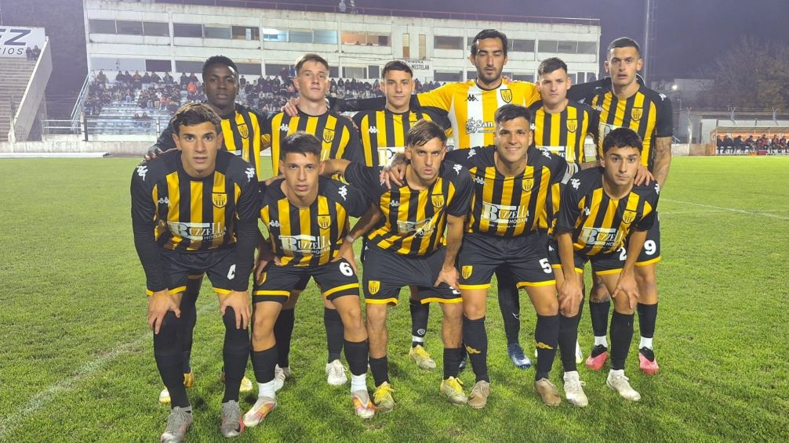

Santamarina logró su primer triunfo en el cásico
En el adelantado de la URD, el Aurinegro venció a Ferro por 2 a 1. En el partido que marcó el comienzo de una nueva fecha de la URD, Santamarina venció 2 a 1 a Ferrocarril Sud y se quedó con el clásico tandilense. El encuentro se disputó en el Estadio General San Martin.
Ciros abrió el marcador para Santamarina, mientras que Candia empató transitoriamente. Urban fue el héroe de la noche que puso el 2 a 1 para la celebración del mundo aurinegro, que logró sumar de a tres por primera vez en lo que va del torneo. Ferro, por su parte, hace cuatro partidos que no gana y viene de tres derrotas consecutivas. El domingo se completará la fecha de la URD que tiene a Gimnasia como líder.